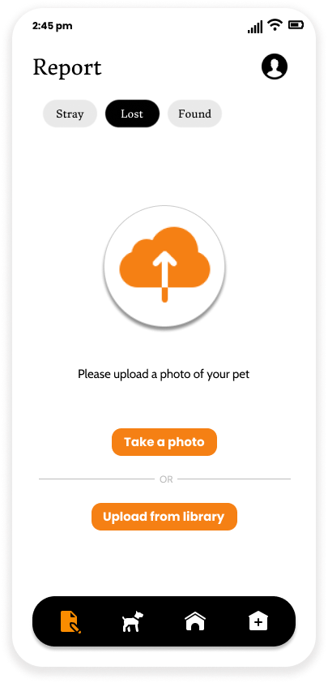
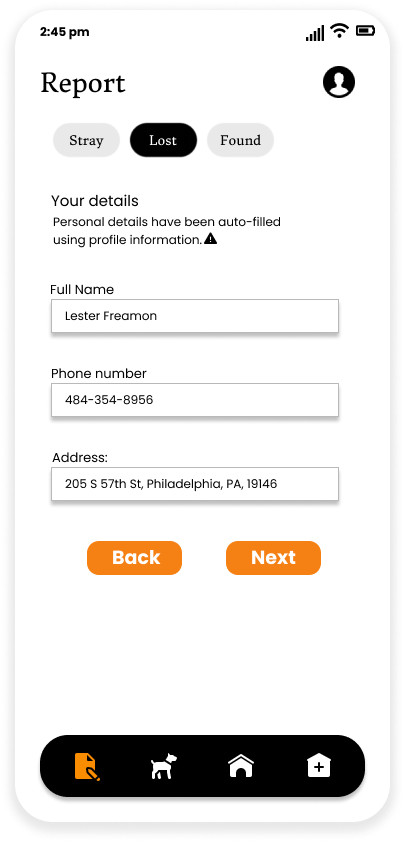
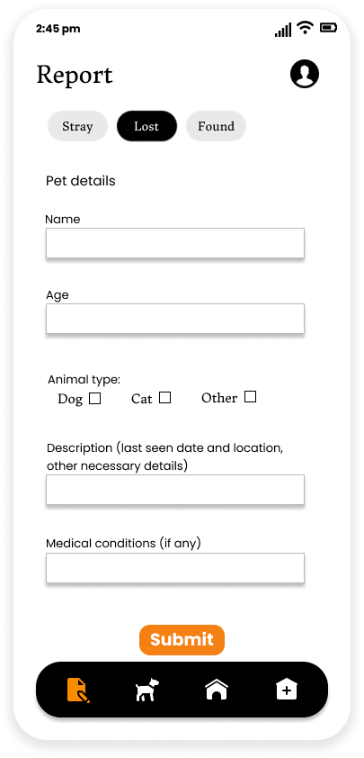

Centralized Animal Rescue or CAR lets users report lost animals and sends alerts to a number of animal shelters based on proximity and availability.
Initially, users are advised to check the Found section on the Animals tab to see if their missing pet has been reported found. Users are also given tips on what to do when their pet goes missing.
Users are first asked to upload a photo of the animal. Users also have the option of capturing a photo or uploading one from their library, uploading and deleting multiple photos.

Users are then asked to provide their personal information so that they can be notified when their missing pet has been found via a "found report" or animal shelters.

Users are then asked to describe their missing pet in detail so that the details can be put on the respective lost report. Users are asked for details such as last seen date and location of the missing pet, any existing medical conditions so that they can be treated when found, and other necessary information.
